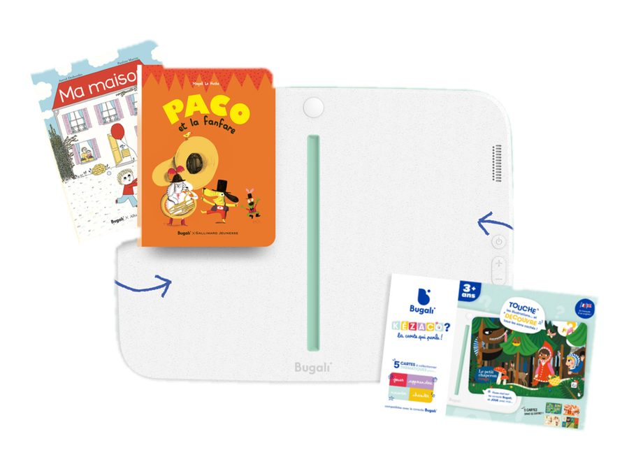
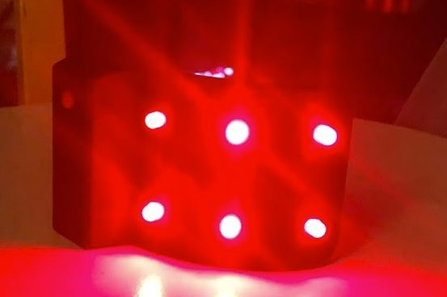
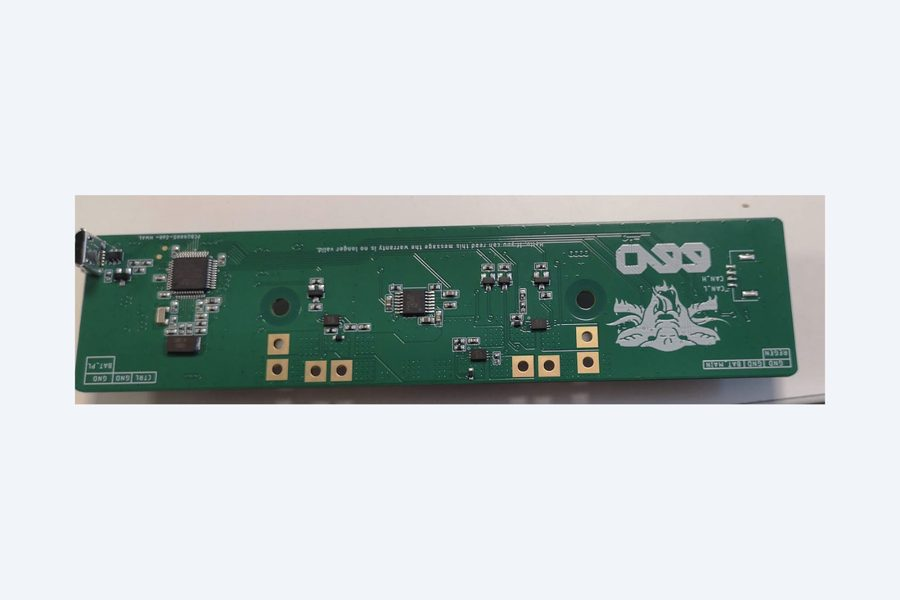

Ingénieur Électronique
Je conçois et j'industrialise des produits électroniques, du POC à la série. J'aime autant concevoir un produit que les outils et les bancs de test qui le fiabilisent — et démêler les problèmes de production et d'assemblage.
Ce que je fais
Trois métiers complémentaires, du besoin au produit en série.
01 · Concevoir
Architecture, schéma, routage multicouche, prototypes : transformer un besoin en cartes qui fonctionnent.
02 · Fiabiliser
Bancs de test et outils : chaque produit sort d'usine testé sur toutes ses fonctionnalités.
03 · Industrialiser
EMS, DFX, certifications CE / CEM / RF : sortir le produit d'usine, en série, au bon coût.
Mes réalisations
Dix ans de produits : trois industrialisés, une dizaine de prototypes qui ont vécu.

Bugali — console jeunesse
Architecture, PCBs, bancs de test, certifications : product owner de la console jusqu'à l'usine.
Monimalz — tirelire connectée
Cartes V1 et V2, monnayeur breveté, industrialisation et certifications en Chine.

Boîtier fer à fileter — maroquinerie
Passage de l'analogique au µC, firmwares des variantes, DFM / DFA / DFT, production.
Prototypes — levées de fonds, tournages, essais terrain
POC Bugali — livre + projecteur
Premiers protos du livre connecté à un vidéoprojecteur : détection de pages, tactile, motherboard.

Captain Blink — brassard cycliste
PCB µC + LED pour tester les guides de lumière et valider le concept optique.

66origin — powerbank vélo
Carte switch batterie (STM32, CAN) et carte de connexion à pogo pins avec écran, et leurs firmwares.
KFC Delivery Safe
Coffre de livraison sécurisé imaginé pour KFC — 5 protos fonctionnels pour le tournage.
Plug & Ride
Ensemble produit : carte + soft + accessoire, communicant avec l'app du client.

Ruche connectée Beeonline
Carte et soft embarqué : GSM, capteurs poids, température, humidité.
Bugali — outils & bancs de test
Des consoles de série sans port de debug, des livres par centaines de milliers : j'ai conçu avec le lab les outils de toute la chaîne.

Module de programmation & debug
Se connecte sur la main board pour ajouter un port de communication aux consoles industrialisées.

Banc de test livre V2 — imprimeur
Connecté aux serveurs Bugali, interface LabVIEW — déployé chez l'imprimeur en Chine.
Et aussi : banc de test présérie (150 produits programmés et testés), banc de compression zebra, banc de validation produit (des centaines d'heures de log en température), banc de contrôle des boîtes de livres fermées… Le détail est dans le book.
Mon parcours
Dix ans entre bureau d'études et usine, du prototype à la série.
Indépendant
Formation Python & data (Pandas, Jupyter), un projet électronique sous KiCad, et du conseil pour des projets amis.
Bugali — Ingénieur électronique puis Hardware Manager
Verrous techniques de la console, architecture, industrialisation et certifications, jusqu'à la production en série en France.
Freelance
POC Bugali, powerbank 66origin, brassard Captain Blink, accompagnement d'étudiants aux Gobelins.
LetMeKnow — Bureau d'études IoT
Monimalz V1 et V2 pour Yellow Innovation (La Poste) : présérie présentée au CES 2018, puis série industrialisée en Chine.
Atelec Électronique — BE prototypage & petites séries
Boîtier de fer à fileter industrialisé, ruche connectée, détecteur d'amiante, support production.
Prynt · Incubateur HAX, Shenzhen
3 mois auprès d'une startup développant une imprimante pour smartphone, au cœur de l'écosystème hardware chinois.
Compétences
Ce que je sais faire — et les outils qui vont avec.
Conception électronique
Architecture · choix et dimensionnement des composants · schéma et routage multicouche et flex (Eagle, Fusion 360, Altium, KiCad) · intégration électro-mécanique, lecture 3D.
Prototypage & test
Assemblage · soudure, câblage · mesure · validation fonctionnelle · bancs de test.
Industrialisation
DFM, DFA, DFT · AMDEC · BOM et dossiers de production · pilotage EMS · certification CE / CEM / RF · suivi de production.
µC, SOM & langages
STM32 · ESP32 · SOM i.MX6 · nRF52840 · SAMD21 · PIC · ATMEGA · C · Arduino · Python · LabVIEW · Pandas, Jupyter, Grafana.
Connectivité & produits connectés
I2C / SPI / UART / CAN / USB / I2S · BLE · Wi-Fi · GSM · RFID · trois produits liés à leur app.
Méthodes & outils
Bibliothèques de composants · design reviews · documentation (CIR, dossiers) · Jira · Confluence · GitHub.
Téléchargements
Mon dossier de candidature, en trois formats.
Book · Portfolio
9 pages de projets illustrés : Bugali, Monimalz, Atelec, freelance, bancs de test.
Ce que je recherche
Un poste de responsable hardware ou d'ingénieur électronique senior, dans une équipe pluridisciplinaire : électronique, mécanique, logiciel, expérience utilisateur.
Me contacter